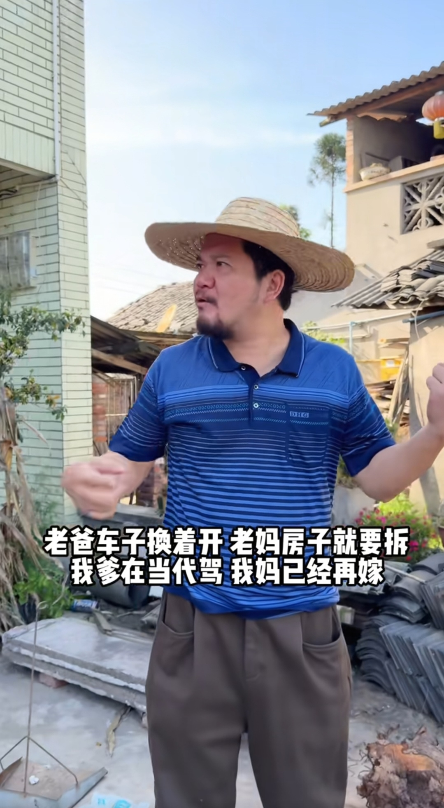
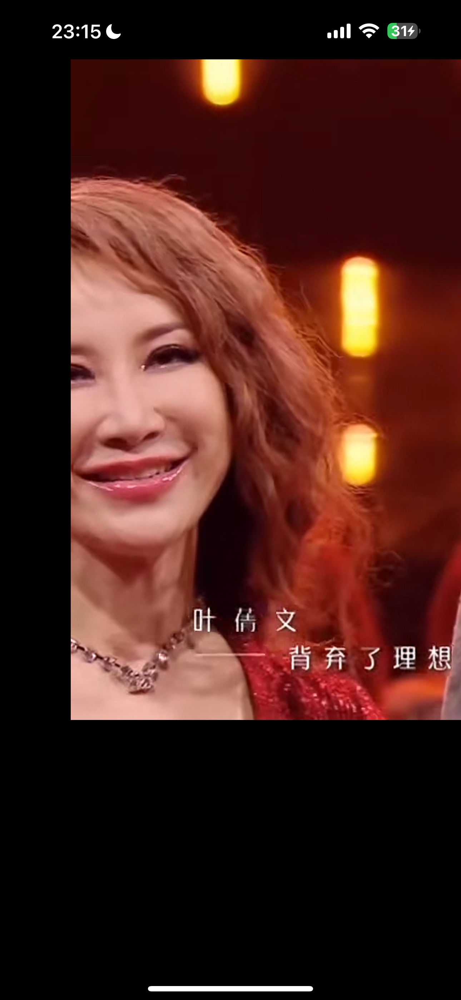
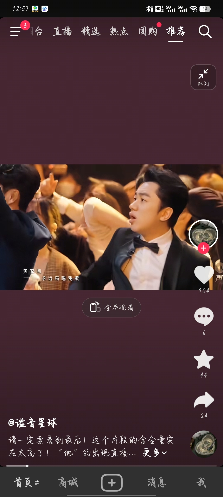

我怕唱到一半这女的被拐卖到这男的家[流泪]
按理说她应该过她词里写的生活，但是她没有，她穿着花衣服和这个男的在同一个背景下生活
我以为是被拐卖妇女唱的，吓死老子了
在这个时候，人和人差距已经开始无限拉大了 
心🫀提到嗓子眼儿看完的，生怕来句他两个成了两口子[流泪][流泪][流泪][流泪]
这女孩好像在唱后妈茶会话那种感觉
小时候看不懂 现在好了 完全大黄丫头[憨笑]
又学到了奇奇怪怪的新词，菌子汤[吐舌]
我也想喝彭于晏的菌子汤
这部电视剧是十一年前老剧了，当时也是在湖南卫视审核正经播出的，演员也很认真，有的人嘴下留情，我只是觉得有趣截取了片段，因为这几秒钟剧情破口大骂的清朝人能不能划走别让我删你
[发呆][发呆]昨晚上的菌子汤？？我的老天爷
难怪他们两个脸通红 哈哈哈哈哈
菌子像什么，或者说蘑菇你总见过吧，像什么，菌子的汤——也就是像菌子的那个东西的汤，这个汤你看看联想一下有什么别的引申义。菌子汤也可以说菌子产的汤，像菌子的东西产的像汤的东西。[呆无辜]
车轱辘都碾我脸上了[不你不想]
这就是学霸的感觉吗
可是那个一点都不好喝啊[宕机]
现在都差点没听懂[听歌]
这个爸爸还可以，起码全程没有看手机[阴险][阴险][阴险][阴险][阴险][阴险]
爸爸还在那摆优美孔雀舞pose [捂脸]
感觉说得好对，人都是被骂傻的，被骂的多了就畏畏缩缩不敢自主，越骂越傻
我发现身边的也是 凡是爸爸妈妈情绪稳定的孩子学历都很高[宕机]
太认同了。我妈婚姻不幸福，遇到了比她大一轮的我爹，我爹做过大牢，把他在大牢自己遭过得罪全都给我妈用上了，每次都是锁上门往死里打那种，我妈来月经他都要同房那种，不管死活。有一次我妈月经疼的受不了不能同房，我爸居然说让我伺候他。就是这么一个畜生！但我妈妈非常伟大，她从没有把自己的选择错误发泄在我身上，她一直爱我，鼓励我。她说我给你选了个这样的家庭和畜生爸爸是我最大的罪！她一生自责！尽她最大的努力用命护着我，我很爱我的妈妈！她的爱让我在人生路上无论遇到什么事都是来自心中最强大的精神力量！
卓越的家庭培养卓越的孩子，庞众望的妈妈配享太庙[赞][赞][赞][赞][赞]
想看，孙俪演的一点错没有[泪奔]，业务做到后面就是这样[捂脸]
要是她追我的话，我要多少嫁妆合适呢[害羞][害羞]
他们都是冲着你女儿来的，只有我在关心爸您有根头发白了[流泪]
谁懂黄家驹唱完群星再出来的那种感觉，一身鸡皮疙瘩[泣不成声]
声生不息第一季在我心中已经无法被超越了
Coco 你真的好美 
祖蓝哥这里无措又期盼的张望[流泪][流泪]天呢[流泪][流泪][流泪][流泪] 
coco当时还在[泣不成声]
吴彤看一下这才是用心的做情怀
哪怕我已经看很多次了，但是还是直接起鸡皮疙瘩了[泣不成声]
没想到2023年李玟因为抑郁症在家中自杀身亡[泣不成声]，去天堂陪黄家驹了[泣不成声]，coco姐。
以前的歌真的很大气啊
一开始刷到这小孩觉得丑丑的[黑脸]后来越看越可爱
义乌老板娘是真正的老板娘
义乌老板娘的面相个个看起来都是国泰民安的，难怪这么能干富足！
义务老板娘霸气[赞]
美版iPhone[捂脸]才是真正的iPhone
为啥感觉你的屏幕边框没有一样[捂脸]
高端的商战就是这么朴实无华，索尼要让全世界都知道杀人犯用的是尼康[看][看][看]
索尼真会来事，就为了告诉全世界：杀人犯用尼康相机[看]
Read more: